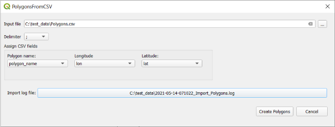
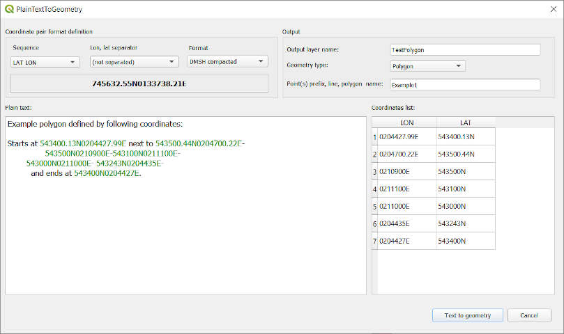
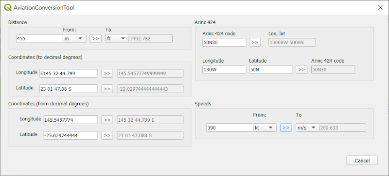
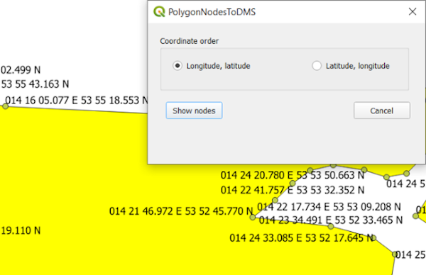

Create polygons from coordinates stored in CSV file.

Extract coordinates form plain text and create points, line or polygon.

Convert among various unit, formats common in aviation industry.

Show polygon nodes in DMS format.